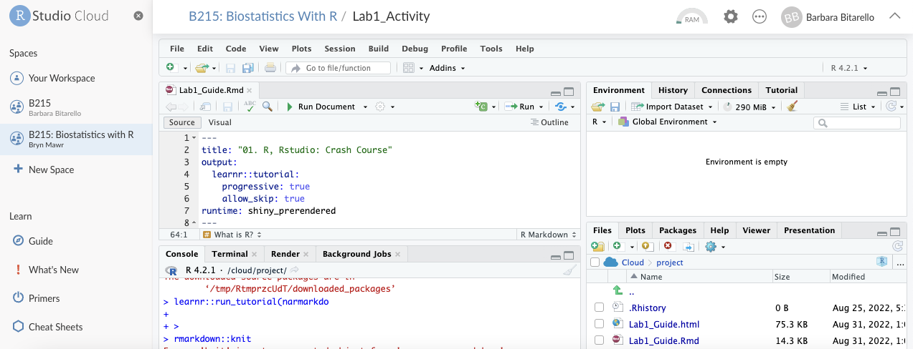
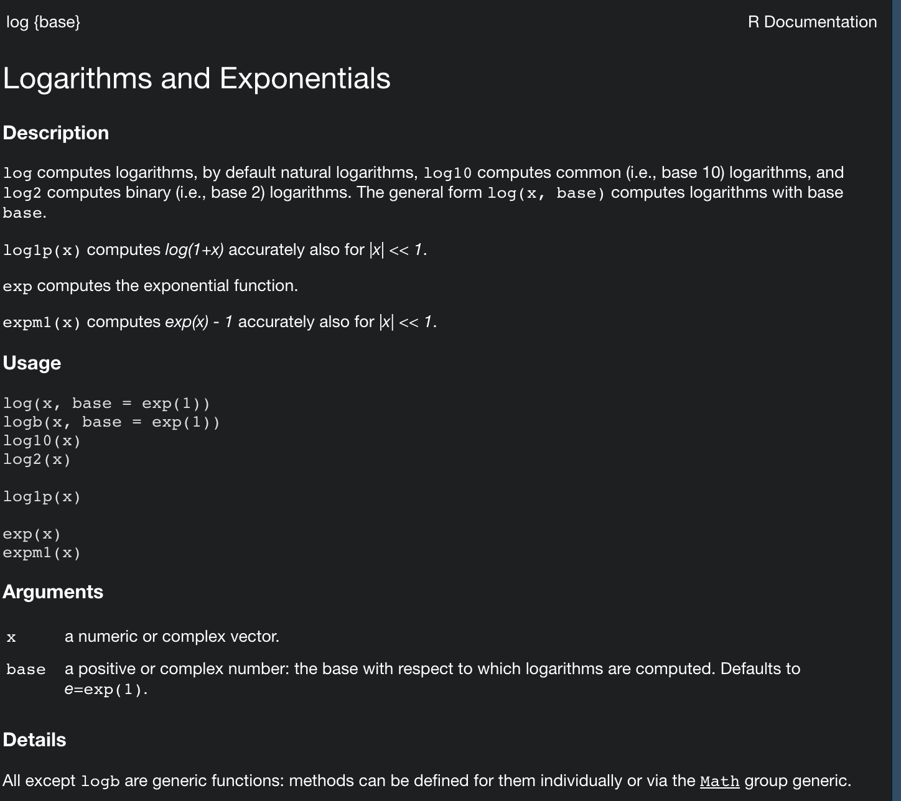
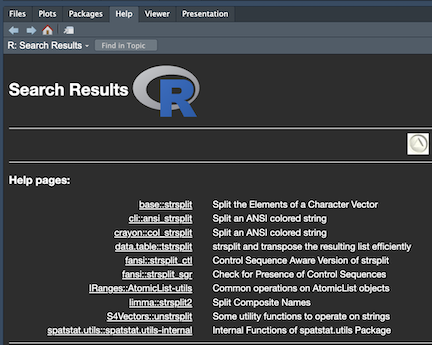

Tasks
- Complete DataCamp activities (All chapters of “Getting Started with R”)
- Work through this document
- Create a basic R script
- Create an R markdown document with your personal notes and code
- Complete the Quiz at the end of this doc
- Downlod the file with your answers and upload to moodle
Learning outcomes
Getting started with R and RStudio
Understand the difference between R and Rstudio
Use the R console (command-line)
Use R as a calculator
Understand the concepts of input and output in R
Assign variables
Understand the main variable types in R (string, Boolean, numeric)
Use pre-built functions in R
Learn how to learn about a specific function
Learn how to create, name, and index vectors
Save your code in an R script
What is R?
R is awesome. This is our first lesson. Let’s dive in.
R is a computer program that allows an extraordinary range of statistical calculations. It is a free (open source) programming language and program for statistical computing and graphic, mainly written by voluntary contributions from statisticians around the world. R is available on most operating systems, including Windows, Mac OS, and Linux.
It is one of the primary languages used by data scientists and statisticians alike. It is supported by the R Foundation for Statistical Computing and a large community of open source developers.
R can make graphics and do statistical calculations. It is also a full-fledged computing language. In this course, we will only scratch the surface of what R can do but hopefully it will be enough to give you a solid foundation and essential toolkit for any current-day biologist.
Since R is an open source program and freely available, it is very attractive for academics whose access to statistical programs is regulated through their association to various colleges or universities.
What is RStudio?
Rstudio is a separate program, also free, that provides a more elegant front end for R. RStudio allows you to easily organize separate windows for R commands, graphic, help, etc. in one place.
Since R utilizes a command line interface, there can be a steep learning curve for some individuals who are used to using GUI focused programs.
For this course, we will use Rstudio Cloud.You are welcome (but not required) to install the desktop version of R and Rstudio as well on your machine.
R and RStudio are not the same thing!
RStudio is a different program from R—it is installed separately and occupies its own place in the Programs menu (Windows PC) or Applications folder (Mac). You can run R without RStudio but you cannot run RStudio without R.
How does the Rstudio Cloud workspace work?
Join the B215: Biostatistics with R (Fall 2025) Posit Cloud workspace. This space will be updated often, and you will see a mirrored version in your own space.
Important:If the workspace is changed by the instructor, you would need to delete your mirrored version and create a new one to see those changes – but hopefully we won’t need to do this!
When you start RStudio, it will automatically start R as well. You run R inside RStudio.
After you have started RStudio, you should see a new window with a menu bar at the top and three main sections. The righthand of the section is called the “Console” – this is where you type commands to give instructions to R and typically where you see R’s answers to you. You can also expand a fourth section above the console, which is labeled “Source”, in this section you can create and save files.

Another important corner of this window (located in the bottom left) can show a variety of information. Most importantly to us, this is where graphics will appear, under the tab marked “Plots”.
Saving your code
Good science relies on reproducibility of findings. In the world of computer programming, this means:
- Raw data is never modified; you read it as is, process it, and produce outputs
- Outputs should be disposable; if your computer explodes, as long as you backed up your code you should be able to reproduce your output/results
- Manual steps (i.e., these that cannot be automated) should be avoided or otherwise minimized
- Ideally, one software package (in our case, R) should be enough to run your code; if other software is needed, ideally you would make the integration between them work seamlessly and in an automated way [this is beyond the scope of our course]
So how do you save your code?
A basic R script
An R script is a text file containing your R code. Commented lines (‘#’ sign) are read as comments.
- Go to the Weekly Lab Activities
>Lab1 activity. - Click on File
>New File>R Script. This will open a blank file. - Type “#” followed by your full name. That is a comment and is ignored by R.
- In the next line, type:
120/10- Now press command + s to save (or click File
>Save OR click on the little save icon at the top of the script) - Voilà! You have created your first R script. Save your file as lab1_lastname_firstname (fill in with your name)
- Keep this file open and as your progress through this document, whenever any code appears, write it down preceded by a description in the form of a comment
- Later we will see how to turn this into an R markdown file
The Console
When you start RStudio, you’ll see a corner of the window called the “Console.” By default the console window is in the bottom left of the Rstudio screen.
You can type commands in this window where there is a
prompt (which will look like a > sign
at the bottom of the window). The Console has to be the selected window.
(Clicking anywhere in the Console selects it.)
The > prompt is R’s way of inviting you to give it
instructions.
- You communicate with R by typing commands after the
>prompt. - What you type into the prompt will be treated as an input for R to do something with.
Let’s see some examples.
Examples
Type 2+2 at the > prompt, and hit
return. You’ll see that R can work like a calculator (among its many
other powers). It will give you the answer, 4, and it will label that
answer with [1] to indicate that it is the first element in
the answer. (This is sort of annoying when the answers are simple like
this, but can be very valuable when the answers become more complex.) In
other words, your input being 2+2 will result in an output being
[1] 4. Try it:
2 + 2 #inputIn these labs, the input will show up in a gray box and the output, if any, will follow in a white box.
2 + 2## [1] 4Now try running below the operation
Logs and Roots
You can use a wide variety of math functions to make calculations
here, e.g., log() calculates the log of a number:
log(10)## [1] 2.302585Note: By default, this gives the natural log with base
e.
Parentheses are used both as a way to group elements of the calculation and also as a way to denote the arguments of functions. The “arguments” of a function are the set of values given to it as input.
For example, log(3) is applying the function
log() to the argument 3.
By the way, e (mathematical constant that is the base of
the natural logarithm) in R is obtained by:
exp(1)## [1] 2.718282sqrt()
Another mathematical function that often comes in handy is the square root function, sqrt(). For example, the square root of 4 is:
sqrt(4)## [1] 2To calculate a value with an exponent, used the ^ symbol. For example \[4^3\] is written as:
4^3## [1] 64Of course, many math functions can be combined to give an almost infinite possibility of mathematical expressions. For example,
\[\frac{1}{\sqrt2\pi\times 3.1^2}e^{-\frac{(12-10.7)^2}{2\times 3.1}}\]
can be calculated with:
(1/(sqrt(2 * pi * (3.1)^2))) * exp(-(12 - 10.7)^2/(2 * 3.1))## [1] 0.09798692Try to run these yourself in the sandbox. For practice you should type things in instead of copying and pasting (trust us):
R commands summary
Here is a non-exhaustive list of common mathematical operators you may want to use in R:
| Description | Operator |
|---|---|
| Equal to | == |
| Not equal to | != |
| Assignment of a value to a variable | <- or = |
| Addition | + |
| Subtraction | - |
| Multiplication | * |
| Division | / |
| Exponentiation | x^y or x\*\*y |
| Modulo (x mod y), returns remainder of a division | x %% y |
| Less than | < |
| Greater than | > |
| Less than or equal to | <= |
| Greater than or equal to | >= |
| x OR y (Boolean) | x || y |
| x AND y (Boolean) | x && y |
Getting info about a function
In your prompt, type:
`?`(log)This will make an R documentation appear on the right side of your Rstudio pane. This is an R help page.

Note: typing help() and the name of the function of
interest inside the parentheses gives you the same result. Try it!
Remember:
- All pre-built functions in R have R pages that you can access in this way
- If you are trying to access the help function for a package that is not installed by default in R, you will need to add an extra “?”
- Most other packages you install will also have such help pages but you can only access the info if you have installed the package AND loaded it.
For example, try to find the help page for the function “tstrsplit”:
`?`(tstrsplit)## No documentation for 'tstrsplit' in specified packages and libraries:
## you could try '??tstrsplit'You got an error, which would make some people give up. But if you are certain the function exists, you can try:
`?`(`?`(tstrsplit))This will show any match to “tstrsplit” within installed packages in your workspace. Something like this:

Packages
- If you click on “Packages” in the lower right, you will see currently installed packages. The checkmark highlights those that are currently “loaded” into your workspace
- You can install packages by going to Tools
>Install Packages and searching for a package of interest.
Sandbox: Use the area below for any R practice
help(log)Assigning variables
A variable is a thing that can change.
Variable names should:
- be meaningful
- they can include letters and numbers
- NOT begin with a number
- spaces are not tolerated – In fact, in the world of programming you should forget spaces altogether when naming things (variables, files, functions, etc.) because they are a no-no use underscores, periods, capitalization, etc. if you want to separate words Example: instead of “my var”, use “myvar”, “myVar”, “my_var”, etc.
- choosing meaningful names makes your code easier to read - by you and others
xvar = 2 #good
x_var = 9 #also good
yvar <- 4 #you can use <- as well for assignments of values to variablesx var
and y var instead:
You should get an error for an “unexpected symbol”, that’s the space.
Data types in R
Variables in R can be numeric, text, or Boolean (true/false).Text variables are referred to as strings in R (and many other programming languages).
Basic data types in R can be divided into the following types:[^6]
- numeric <- (10.5, 55, 787)
- integer <- (1L, 55L, 100L, where the letter “L” declares this as an integer)
- complex - (9 + 3i, where “i” is the imaginary part)
- character (a.k.a. string) - (“k”, “R is exciting”, “FALSE”, “11.5”)
- logical (a.k.a. boolean) - (TRUE or FALSE)
Examples: (try these in the sandbox at the end of this section)
# numeric
x <- 10.5
class(x)
# integer
x <- 1000L
class(x)
# complex
x <- 0+9i + 3
class(x)
# character/string
x <- "R is exciting"
class(x)
# logical/boolean
x <- TRUE
class(x) # this command tells you the class of a given variable or R object.
2 < 0 #Try this and see what happensWe’ll cover these data types and their uses in depth in Lab 2, but for now if you want a head start you can learn more at Data types in R. W3schools.com. https://www.w3schools.com/r/r_data_types.asp .
Numbers
There are three number types in R:
- numeric: the most common type in R; contains any number with or without a decimal
- integer: numeric data without decimals. This is used when you are certain that you will never create a variable that should contain decimals. Just add the letter L after the number to create an integer.
- complex: number is written with an “i” as the imaginary part. Less used.
Example
Try these in the sandbox at the end of this section.
x <- 200.8 # numeric
y <- 1000L # integer
z <- (0+1i) # complexYou can convert from one type to another with the following functions:
as.numeric()
as.integer()
as.complex()Try these in the sandbox below:
x <- 200.8 # numeric
y <- 1000L # integer
x2 <- as.integer(x) #what happens here?
y2 <- as.numeric(y) #what happens here?
class(x2)
class(y2)Sandbox: Use the area below for any R practice
R Data Structure
R has several data structures: vectors, lists, matrices, arrays, data.frames, factors.
Today we will see vectors and factors:
Vectors
A vector is simply a list of items that are of the same type.
To combine the list of items to a vector, use the c() function and separate the items by a comma.
In the example below, we create a vector variable called planets, that combines strings:
# vector of strings
planets <- c("Earth", "Mars", "Saturn")
# print planets
planetsIn this example, we create a vector that combines numerical values:
# vector of numeric values
prime_numbers <- c(2, 3, 5, 7, 11)
# print prime numbers
prime_numbersYou can create a sequence of numbers using : :
Vector with numerical values in a sequence:
numbers <- 1:10
numbersR Quiz 1
When you’re ready, take the quiz. In your console, type:
learnr::run_tutorial("Quiz1.Rmd")Download answers
- Click the button to download a file containing your answers.
- Save the file onto your computer in a convenient location.
(If no file seems to download, try right-clicking the download button and choose "Save link as...")